Club de Inversión Familiar · campaña Instagram · octubre 2026
La paga que enseña a invertir
Dosier de campaña dirigido a padres y madres de adolescentes y veinteañeros. Contiene el concepto, los claims, 19 pantallazos de la aplicación con datos sintéticos (Familia García) y, para cada pantalla, el gancho, el guion de Reel y el texto en pantalla para que puedas montar los vídeos de promoción.
Público: madres y padres de 40 a 58 años con hijos de 14 a 26Objetivo: registros de familias en clubdeinversionfamiliar.comFormato principal: Reels de 15–30 s con grabación de pantallaDatos: 100 % sintéticos, regenerables con scripts/seed-demo.ts
Los padres saben que sus hijos van a invertir: ya lo hacen en cripto, con apps de bróker o siguiendo a alguien en TikTok. Lo que no saben es cómo meterse en esa conversación sin dar un sermón. El Club convierte la paga en un juego mensual con reglas de inversor adulto: una lección, una decisión, un porqué escrito y una liga familiar que premia explicar bien, no acertar por suerte.
Tensión
«Mi hijo invierte y yo no sé ni qué le preguntar.»
La educación financiera no llega del instituto. Llega de un vídeo de 40 segundos de un desconocido. El padre quiere estar en la foto y no sabe cómo.
Promesa
Un club de inversión real, a escala de paga.
Importes pequeños (10–50 € al mes), datos de mercado de verdad, un presidente (tú) que publica la cartera del mes y una familia que compite por el mejor argumento.
Prueba
Cada pantalla enseña algo que el padre no sabía que podía hacer en casa.
Academia por niveles, ficha de cada valor con PER y lectura técnica explicada, repaso de carteras archivadas, aviso por WhatsApp con enlace directo.
Tono de la campaña
Cómplice, sin paternalismo y sin promesas de dinero. Hablamos a un adulto inteligente que quiere criar a otro adulto inteligente. Vocabulario del día a día («la paga», «el porqué», «la liga»), nunca jerga de bróker. El protagonista del vídeo es la conversación en casa; la app es la excusa.
Palabras que sí: aprender, explicar, en familia, porqué, decidir, liga, mes a mes. Palabras que no: ganar dinero, rentabilidad garantizada, hacerse rico, pelotazo, señal de compra.
2 · Claims de la campaña
Un claim paraguas, seis ángulos para rotar en Reels y carruseles, y los cierres de llamada a la acción. Todos caben en una línea de texto sobre vídeo.
Claim paraguas
La paga que enseña a invertir.
Variantes: «La paga que enseña a invertir. En familia.» · «Convierte la paga en un club de inversión.» · «Tu paga, tu decisión, tu porqué.»
Ángulo 1 · Urgencia tranquila
«Tu hijo va a invertir igual. Mejor que aprenda contigo.»
Reconoce la realidad sin alarmar. Funciona de apertura de campaña y como gancho hablado a cámara.
Ángulo 2 · Contra el ruido
«Antes de que TikTok le enseñe a invertir, enséñale tú a preguntar por qué.»
Diferencia el Club de los gurús: aquí no hay señales, hay argumentos. Ideal para la pantalla del diario de porqués.
Ángulo 3 · Método
«50 € al mes, una lección y un porqué escrito. Así se aprende a invertir.»
Concreto y repetible. Encaja con la Cartera del mes y con la lección del presidente.
Ángulo 4 · Competición sana
«Una liga familiar donde gana quien mejor explica su decisión.»
Reencuadra el ranking: puntos por logros y lecciones, no solo por rentabilidad. Para la pantalla de la Liga.
Ángulo 5 · Conversación
«Pequeñas cantidades. Grandes conversaciones en la cena.»
El beneficio emocional para el padre. Para vídeos con voz en off sobre el repaso de septiembre.
Ángulo 6 · Rol del padre
«No le des consejos de bolsa. Dale un club. Y preside.»
Convierte al padre en presidente: publica la cartera, escribe la lección, avisa por WhatsApp. Para las pantallas de gestión.
Claims cortos para texto sobre vídeo
«Invertir se aprende en casa. Como todo lo importante.»
«Hoy la paga no se gasta. Se decide.»
«El mejor profesor de finanzas de tu hijo eres tú. Con ayuda.»
«Acertar es suerte. Explicar es aprender.»
«Seis niveles, de la hucha al análisis técnico.»
«Cada mes, una cartera. Cada decisión, un porqué.»
«Lo que eligió cada uno, y qué pasó después.»
Cierres / llamadas a la acción
«Crea el club de tu familia gratis en clubdeinversionfamiliar.com»
«Preside el club de tu familia. Enlace en la bio.»
«Primera cartera del mes en diez minutos. Enlace en la bio.»
«Invita a tus hijos. Ellos deciden; tú presides.»
Mantén un único CTA por pieza. En Reels, el CTA aparece en los dos últimos segundos y en la primera línea del caption.
3 · Pantallas y guiones de Reel
Doce capturas de escritorio (1440 × 900) de la Familia García, con el gancho, el guion y el texto en pantalla de cada una. Las de página completa están pensadas para hacer scroll grabado. El orden es el del embudo: primero lo que ve el hijo, después lo que hace el padre.
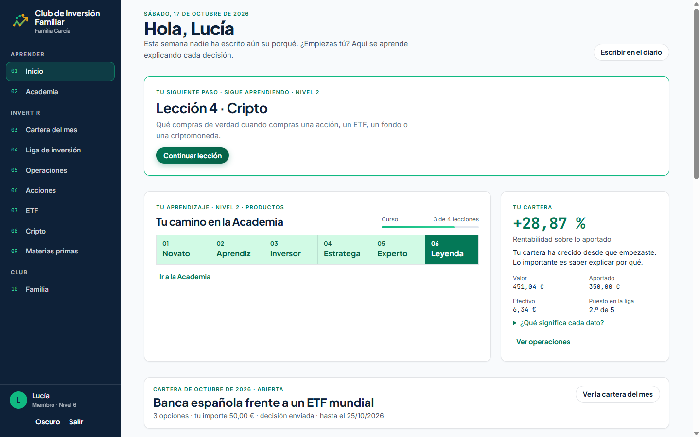
01-inicio-lucia.png · 1440×900 · vista de miembro
01
Inicio del miembro: «Hola, Lucía»
Lo primero que ve una hija de 17 años al entrar: su siguiente lección, su camino por los seis niveles y su cartera con rentabilidad y puesto en la liga. Una pantalla que dice «esto es tuyo».
Claim
«Tu paga, tu decisión, tu porqué.»
Gancho (0–2 s)
«Esto es lo que ve mi hija cuando entra a invertir su paga.»
Duración
15 s
Guion
0–2 Plano de la pantalla con zoom al «Hola, Lucía».
2–7 Voz: «No es un bróker. Es un club. Tiene su lección pendiente, su nivel y su cartera.»
7–12 Scroll suave hasta «Tu cartera +28,87 %». Voz: «Y lo importante no es el número: es que sepa explicar por qué.»
12–15 CTA: «Crea el club de tu familia. Enlace en la bio.»
TEXTO EN PANTALLALo que ve mi hija al entrarNo es un bróker. Es un club.
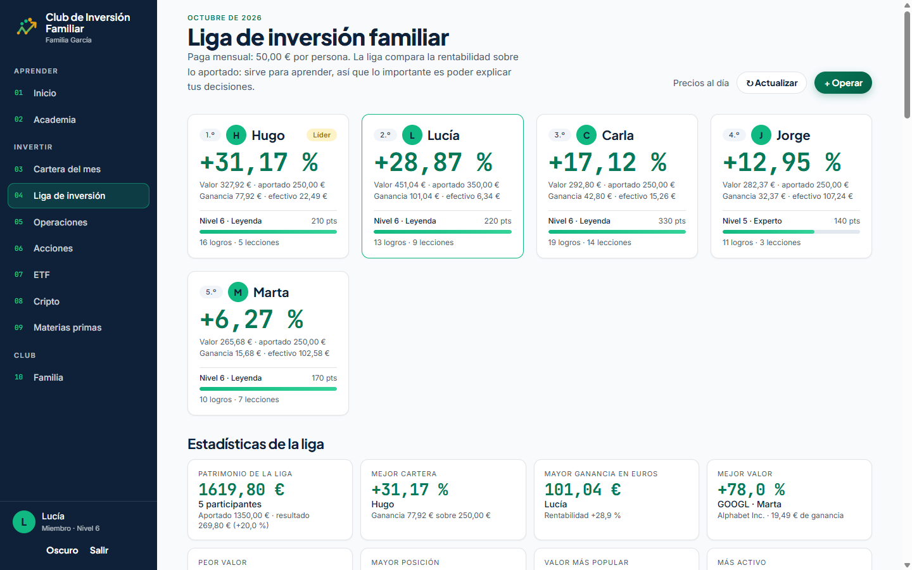
02-liga.png · también 02b-liga-completa.png (página entera, para scroll)
02
La Liga de inversión familiar
Cinco miembros, cinco tarjetas: rentabilidad sobre lo aportado, nivel, puntos, logros y lecciones. Debajo, las estadísticas de la liga (patrimonio total, mejor cartera, mejor valor, más activo). Es la pantalla más «vídeo»: color, números y nombres de la familia.
Claim
«Una liga familiar donde gana quien mejor explica su decisión.»
Gancho
«Mi hijo de 15 años va primero en la liga. Y yo, la última.»
Duración
20 s
Guion
0–3 Zoom a la tarjeta de Hugo «1.º · Líder · +31,17 %». Voz: «Hugo, 15 años. Líder.»
3–8 Paneo hasta Marta «5.º · +6,27 %». Voz: «Marta, su madre, presidenta del club. Quinta. Y encantada.»
8–15 Scroll a estadísticas. Voz: «Porque la liga no premia solo acertar: puntúa lecciones, logros y, sobre todo, explicar cada decisión.»
15–20 CTA: «Monta la liga de tu familia. Gratis. Enlace en la bio.»
TEXTO EN PANTALLAHugo, 15 años: líder de la ligaSu madre: 5.ª y encantadaAcertar es suerte. Explicar es aprender.
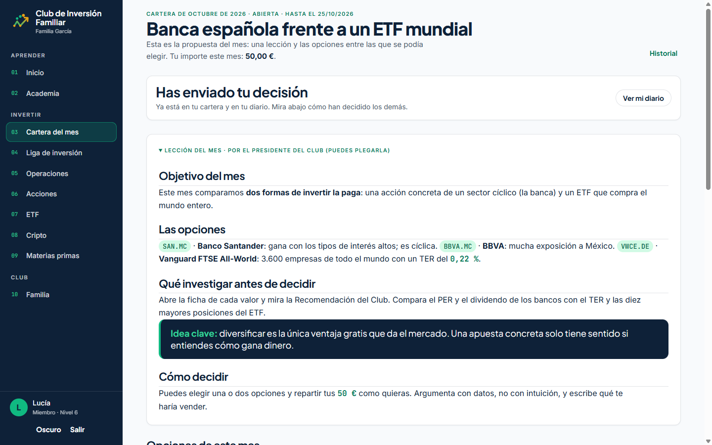
03-cartera-del-mes.png · también 03b-cartera-del-mes-completa.png (opciones, decisiones de los demás)
03
La Cartera del mes: una lección y tres opciones
El corazón del método. El presidente publica un tema («Banca española frente a un ETF mundial»), una lección breve con la idea clave y tres opciones. Cada miembro tiene 50 € y un plazo, y antes de decidir debe investigar y escribir su porqué. En la versión completa se ven las decisiones ya enviadas por el resto de la familia.
Claim
«50 € al mes, una lección y un porqué escrito.»
Gancho
«Este mes en casa no hay paga. Hay una decisión: Santander, BBVA o el mundo entero.»
Duración
25–30 s
Guion
0–3 Título grande. Voz: «Octubre. Banca española frente a un ETF mundial.»
3–10 Scroll por la lección hasta la «Idea clave» en la tarjeta oscura. Voz: «Yo escribo la lección: qué comparamos y qué hay que mirar antes de decidir.»
10–18 Scroll a «Cómo decidir» y a las opciones. Voz: «Ellos tienen 50 euros, hasta el 25, y una regla: argumenta con datos, no con intuición.»
18–25 (03b) Decisiones de los demás con sus porqués. Voz: «Y al enviar, ven lo que pensaron los demás. Ahí empieza la conversación de la cena.»
25–30 CTA: «Publica tu primera cartera del mes. Enlace en la bio.»
TEXTO EN PANTALLAEste mes no hay paga. Hay una decisión.Una lección · 3 opciones · 50 € · un porqué
La cartera de septiembre, archivada. Arriba, las opciones ordenadas por rendimiento desde la publicación; debajo, cada miembro con su decisión, su porqué entre comillas y la frase que desactiva la culpa: «Nadie lo sabía entonces: lo que cuenta es si el porqué era bueno». Es la pantalla que mejor explica la filosofía del Club.
Claim
«Pequeñas cantidades. Grandes conversaciones en la cena.»
Gancho
«En septiembre mi hija metió todo en Google. Su hermano, en Microsoft. Esto es lo que aprendieron.»
Duración
30 s
Guion
0–4 Tarjeta «Con la perspectiva de hoy». Voz: «Un mes después, el Club nos enseña cómo fue.»
4–12 Tabla de opciones. Voz: «Google, +77. Procter, –4. Pero mira quién eligió qué… y por qué.»
12–24 Scroll por las tarjetas de miembros, parando en los porqués de Lucía («lo uso todos los días y el PER…») y Jorge («prefiero dormir tranquilo»). Voz: «Lucía argumentó con el PER. Jorge, con prudencia. Los dos aprendieron.»
24–30 Zoom a «Mirar atrás no es para lamentarse». CTA: «Así se habla de dinero en casa. Enlace en la bio.»
TEXTO EN PANTALLAUn mes después: quién eligió qué«Nadie lo sabía entonces. Lo que cuenta es el porqué.»
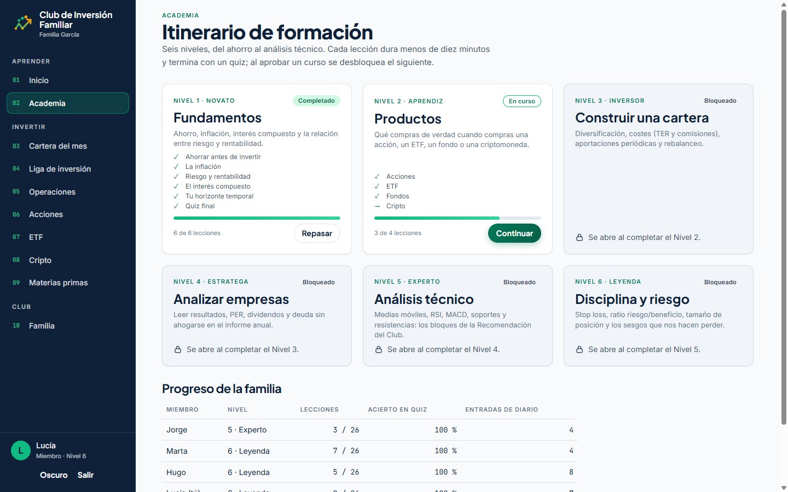
06-academia.png
06
La Academia: seis niveles, de la hucha al análisis técnico
Fundamentos, Productos, Construir una cartera, Analizar empresas, Análisis técnico, Disciplina y riesgo. Lecciones de menos de diez minutos con quiz; cada nivel desbloquea el siguiente. Debajo, el progreso de toda la familia. Responde a la objeción «yo tampoco sé de esto».
Claim
«El mejor profesor de finanzas de tu hijo eres tú. Con ayuda.»
Gancho
«Yo tampoco sabía lo que era el PER. Mi hijo me lo explicó.»
Duración
15–20 s
Guion
0–3 Las seis tarjetas de nivel. Voz: «Seis niveles. Nadie empieza sabiendo.»
3–10 Zoom a Nivel 1 «Completado» y Nivel 2 «En curso». Voz: «Ahorro, inflación, interés compuesto… y, cuando toca, PER, dividendos y análisis técnico.»
10–16 Scroll a «Progreso de la familia». Voz: «Y todos ven cómo va el resto. Incluida la madre.»
16–20 CTA: «Aprended juntos. Enlace en la bio.»
TEXTO EN PANTALLASeis niveles. Nadie empieza sabiendo.Lecciones de 10 minutos con quiz
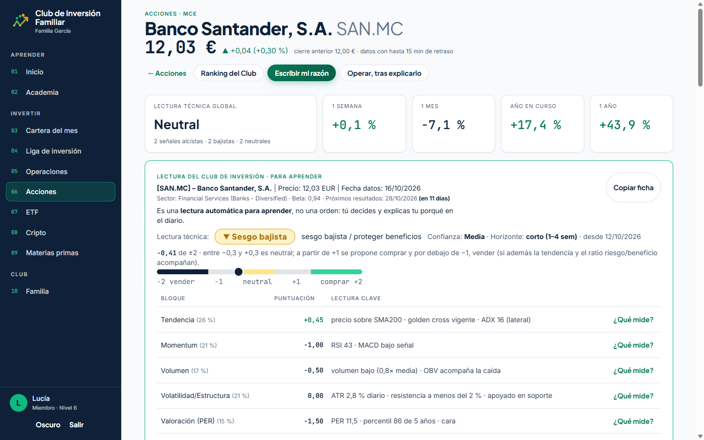
07-ficha-santander.png · también 07b-ficha-santander-completa.png (PER, dividendos, gráfico)
07
La ficha de un valor: datos de verdad, explicados
Banco Santander con precio real, rentabilidades a 1 semana/mes/año, y la «Lectura del Club» con el sesgo, la barra de puntuación de –2 a +2 y cada bloque (tendencia, momentum, volumen, volatilidad, PER) con su «¿Qué mide?». El aviso está escrito en grande: es una lectura para aprender, no una orden.
Claim
«Antes de que TikTok le enseñe a invertir, enséñale tú a preguntar por qué.»
Gancho
«Esto no es una señal de compra. Es una clase de 30 segundos.»
Duración
25 s
Guion
0–3 Cabecera «Banco Santander 12,03 €». Voz: «Un banco de verdad, con precio de verdad.»
3–10 Zoom a la barra «–2 vender · neutral · comprar +2» con el punto en –0,41. Voz: «El Club lo puntúa de menos dos a más dos y te dice en qué se fija.»
10–18 Scroll por los bloques; pausa en «Valoración (PER) · ¿Qué mide?». Voz: «Tendencia, momentum, volumen, PER… cada uno con su botón de “¿qué mide?”.»
18–25 Zoom a «Es una lectura automática para aprender, no una orden». CTA: «Aprender a preguntar por qué. Enlace en la bio.»
TEXTO EN PANTALLANo es una señal. Es una clase.«Tú decides y explicas tu porqué»
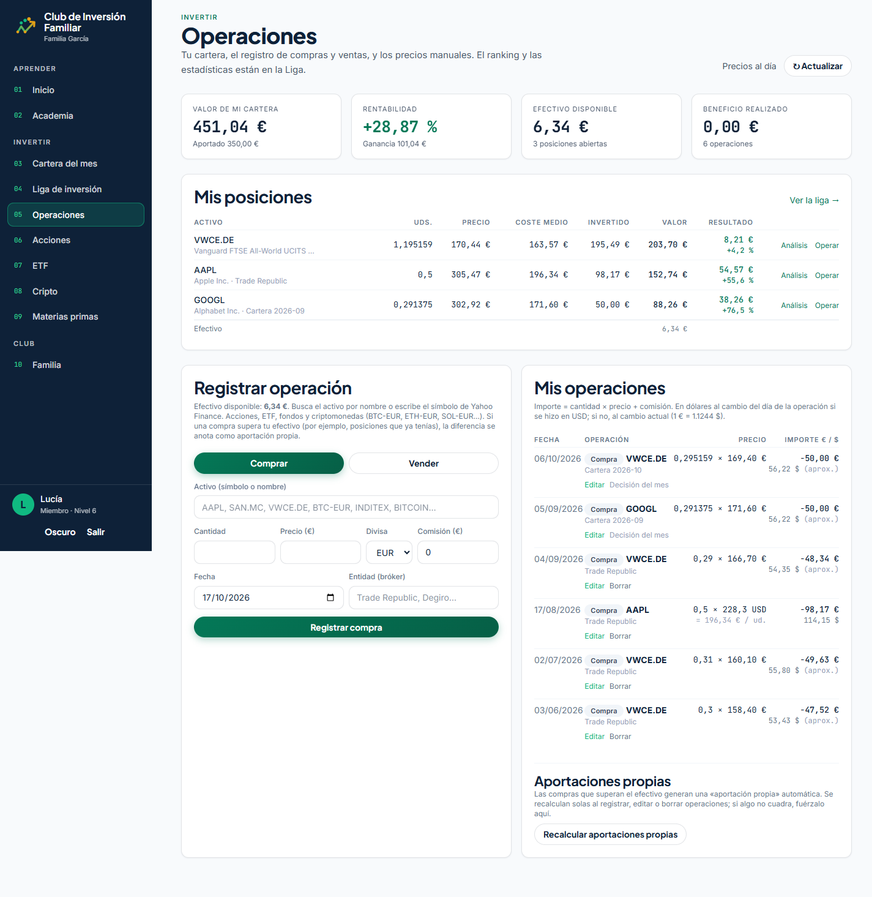
08-operaciones-diario.png · página completa
08
Operaciones: la cartera con sus porqués
Valor, rentabilidad, efectivo, posiciones (ETF mundial, Apple, Alphabet) y el registro de cada compra con su fecha, bróker y, cuando viene de la cartera del mes, la etiqueta «Decisión del mes». Las compras se hacen en el bróker de la familia; aquí se anotan y se explican. Útil para mostrar que son importes de 50 € y que nada es ficticio.
Claim
«Cada mes, una cartera. Cada decisión, un porqué.»
Gancho
«Así queda la cartera de una chica de 17 años después de cinco pagas.»
Duración
15 s
Guion
0–4 Las cuatro cifras de arriba. Voz: «Cinco pagas de 50 euros. Aportado 350; vale 451.»
4–10 Tabla de posiciones. Voz: «Un ETF de todo el mundo, Apple y Alphabet. Comprados en su bróker, explicados aquí.»
10–15 Zoom a «Decisión del mes» en el historial. CTA: «La cartera se construye con porqués. Enlace en la bio.»
TEXTO EN PANTALLA5 pagas · 350 € aportadosCada compra con su porqué
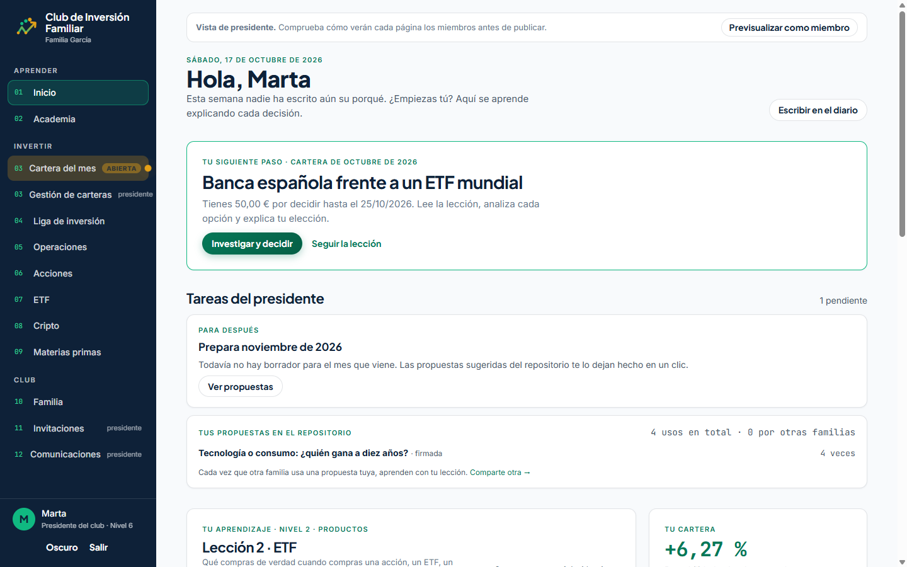
09-inicio-presidenta.png · vista de presidenta (Marta)
09
El padre o la madre preside: tareas y propuestas compartidas
La vista de Marta: «Previsualizar como miembro», sus tareas de presidenta («Prepara noviembre») y cuántas veces otras familias han usado su propuesta «Tecnología o consumo» (4 usos). Muestra que presidir cuesta poco y que las lecciones se comparten entre familias.
Claim
«No le des consejos de bolsa. Dale un club. Y preside.»
Gancho
«Presidir el club de mi familia me lleva diez minutos al mes.»
Duración
15 s
Guion
0–4 «Hola, Marta» con la barra de «Vista de presidente». Voz: «Yo soy la presidenta. Esto es lo que me pide el Club.»
4–10 Zoom a «Tareas del presidente · 1 pendiente · Prepara noviembre». Voz: «Una tarea: preparar noviembre. Con propuestas ya hechas por otras familias.»
10–15 Zoom a «4 usos en total». Voz: «Y mi lección de septiembre ya la han usado cuatro familias.» CTA en pantalla.
TEXTO EN PANTALLAPresidir: 10 minutos al mesLas lecciones se comparten entre familias
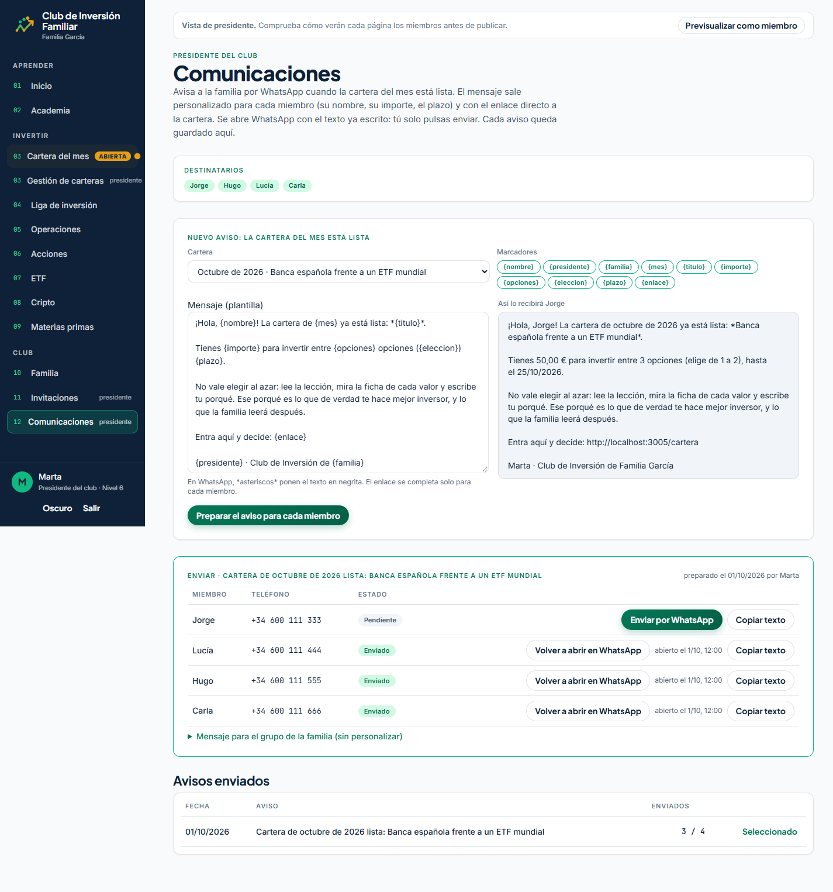
10-comunicaciones-whatsapp.png · página completa
10
El aviso por WhatsApp, personalizado para cada hijo
La plantilla con marcadores, la vista previa «Así lo recibirá Jorge» (su nombre, sus 50 €, el plazo, el enlace directo) y la tabla con «Enviar por WhatsApp» por miembro. Es la pantalla que conecta el Club con el canal real de la familia y la que más hace sonreír a un padre.
Claim
«Hoy la paga no se gasta. Se decide.»
Gancho
«El único WhatsApp que mis hijos contestan en menos de un minuto.»
Duración
20 s
Guion
0–4 Vista previa del mensaje. Voz: «Cuando publico la cartera, el Club me escribe el WhatsApp.»
4–12 Zoom al texto «¡Hola, Jorge! … Tienes 50,00 € … hasta el 25/10 … Entra aquí y decide». Voz: «Personalizado: su nombre, su importe, su plazo y el enlace directo.»
12–17 Tabla con «Enviar por WhatsApp» / «Enviado». Voz: «Un botón por hijo. Y queda guardado quién lo recibió.»
17–20 Corte a un móvil real con el mensaje recibido (grabación propia). CTA.
TEXTO EN PANTALLAEl WhatsApp que sí contestanNombre · importe · plazo · enlace directo
Para el vídeo, sustituye http://localhost:3005/cartera de la vista previa por el dominio real: en producción el enlace sale como https://clubdeinversionfamiliar.com/cartera. Puedes repetir la captura contra producción con una familia de prueba o retocar el texto en edición.
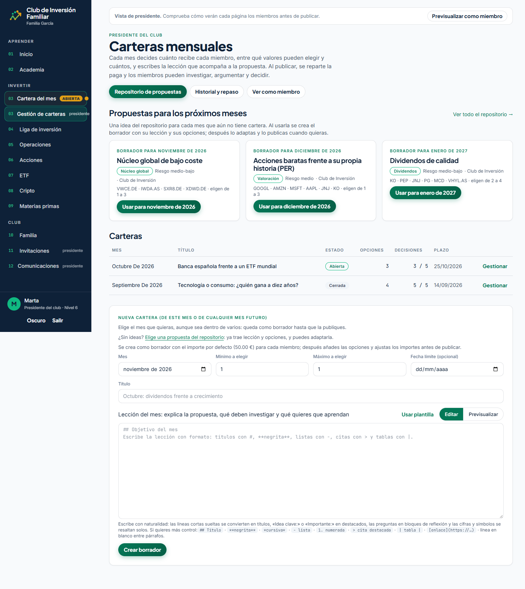
11-gestion-carteras.png · página completa
11
Gestión de carteras: publicar un mes en un clic
La cartera de octubre publicada, los meses futuros en borrador y las propuestas sugeridas del repositorio listas para «Usar». Prueba la promesa de «diez minutos al mes»: no hace falta inventar la lección, se puede adoptar una de otra familia.
Claim
«Primera cartera del mes en diez minutos.»
Gancho
«¿Y si no sé qué proponerles? Esto.»
Duración
15 s
Guion
0–4 Cartera de octubre «Publicada». Voz: «Octubre, publicado.»
4–11 Scroll a propuestas sugeridas. Voz: «Para noviembre no tengo que inventar nada: elijo una propuesta del repositorio y la adapto.»
11–15 Botón «Usar». CTA: «Preside sin ser experto. Enlace en la bio.»
TEXTO EN PANTALLA¿No sabes qué proponer? Elige una.Propuestas de otras familias, listas para usar
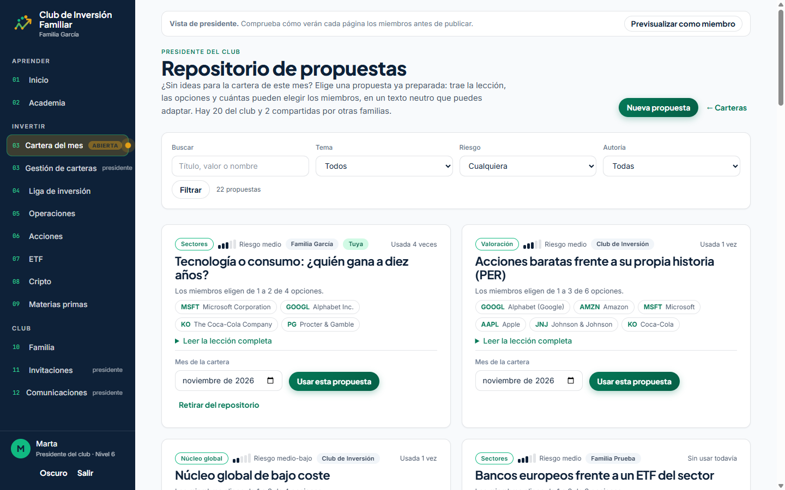
12-repositorio-propuestas.png
12
El repositorio: lecciones compartidas entre familias
Catálogo de propuestas del Club y de otras familias, con el tema, las opciones y cuántas veces se ha usado cada una. Transmite comunidad: no estás solo presidiendo. Buena para un carrusel «5 carteras del mes para empezar».
Claim
«Invertir se aprende en casa. Como todo lo importante.»
Gancho
«Cinco carteras del mes con las que empezar este domingo.»
Formato
Carrusel de 6 tarjetas (portada + 5 propuestas) o Reel de 15 s
Guion de carrusel
1 Portada: «5 carteras del mes para empezar en casa».
2–6 Una propuesta por tarjeta: título, las tres opciones y una pregunta para la cena («¿Qué prefieres: un banco o el mundo entero?»).
7 Cierre con CTA y el claim paraguas.
TEXTO EN PANTALLA5 carteras para empezar este domingoLecciones de familias para familias
4 · Versiones móviles (390 × 844)
Instagram es vertical: estas capturas sirven para Stories y para Reels con el móvil «en mano». Están a 390 px CSS (iPhone 14/15); si necesitas más resolución, graba la pantalla de un móvil real o repite la captura con deviceScaleFactor: 3.
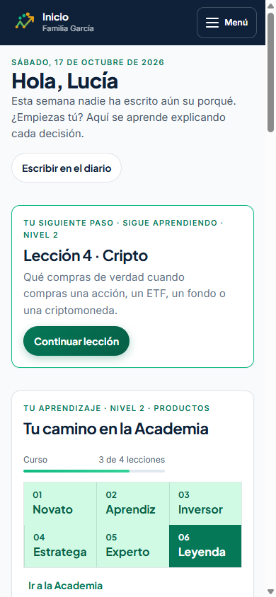
m01-inicio-movil.png
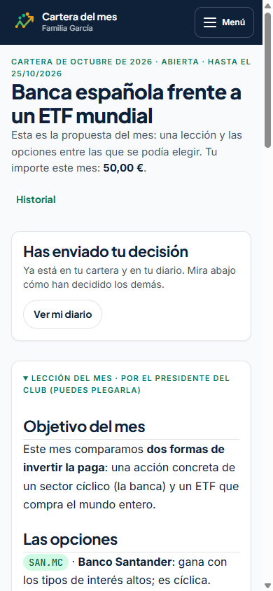
m02-cartera-movil.png
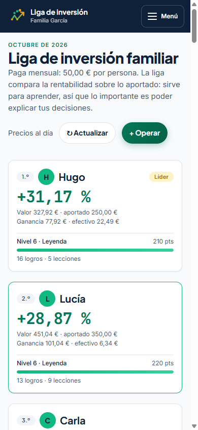
m03-inversiones-movil.png
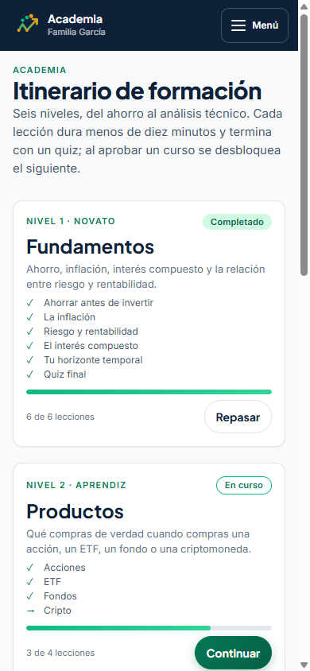
m04-academia-movil.png
Story de 3 pantallas «La paga de octubre»
m02 con sticker de encuesta: «¿Banco o ETF mundial?»
m03 con texto: «Hugo, 15 años, va primero». Sticker de pregunta: «¿Quién ganaría en tu casa?»
m01 con el enlace: «Crea el club de tu familia».
Reel «en mano»
Graba a una persona adulta con el móvil en la cocina abriendo el WhatsApp del Club y entrando a la cartera (m02). Corte a plano cenital de la pantalla con scroll. Voz: «Domingo por la tarde. La paga ya está decidida… y explicada.» El móvil real transmite más que cualquier captura.
5 · Plan de publicación (4 semanas)
Tres Reels, un carrusel y Stories a la semana. Cada semana rota un ángulo del claim para no repetir el mismo mensaje. Publica Reels martes/jueves/sábado entre 20:30 y 21:30, cuando los padres ya han cenado.
Semana
Ángulo
Reel 1
Reel 2
Reel 3
Carrusel
1 · Apertura
Urgencia tranquila
Pantalla 02 (Liga): «Mi hijo de 15 va primero»
Pantalla 01 (Inicio): «Lo que ve mi hija al entrar»
Pantalla 03 (Cartera): «Este mes no hay paga, hay una decisión»
«Qué es un club de inversión familiar» (5 tarjetas)
2 · Método
Método + contra el ruido
Pantalla 07 (Ficha): «No es una señal, es una clase»
Pantalla 06 (Academia): «Yo tampoco sabía qué era el PER»
Pantalla 08 (Operaciones): «5 pagas, 350 €»
«6 niveles de la Academia» (7 tarjetas)
3 · Conversación
Conversación en casa
Pantalla 05 (Repaso): «En septiembre mi hija metió todo en Google»
Reel «en mano» con móvil real
Testimonio a cámara de un padre o madre (30 s)
«5 preguntas para la cena sobre dinero» (6 tarjetas)
4 · Preside
Rol del padre
Pantalla 10 (WhatsApp): «El WhatsApp que sí contestan»
Pantalla 09 + 11 (Presidir): «Diez minutos al mes»
Pantalla 12 (Repositorio): «5 carteras para empezar»
«Cómo montar el club en 10 minutos» (paso a paso)
Reels
9:16, 15–30 s, subtítulos quemados siempre (el 80 % se ve sin sonido). Primer fotograma con la cara o el número grande, nunca con la barra lateral. Música tranquila, sin trending de humor.
Carruseles
4:5, 5–7 tarjetas, una idea por tarjeta, tipografía grande. Última tarjeta siempre con CTA y el claim paraguas. Son el formato que más se guarda entre padres.
Stories
Diarias en semanas 1 y 4. Encuestas («¿Banco o ETF?»), cajas de preguntas («¿A qué edad empezaste a hablar de dinero con tus hijos?») y el enlace a la web. Destacado «Empieza aquí».
6 · Hashtags, bio y CTA
Hashtags (elige 8–12 por pieza)
Mezcla de nicho (padres, adolescentes) y tema (educación financiera). Evita los de trading.
📈 La paga que enseña a invertir Un club de inversión para tu familia: una lección, una decisión y un porqué al mes. Tú presides. Ellos deciden. 👇 Crea el club de tu familia, gratis
Primera línea = gancho del Reel. Segunda = el claim. Tercera = CTA con «enlace en la bio». Después, 2–3 líneas de contexto honesto y los hashtags. Termina siempre con una pregunta para comentar («¿A qué edad empezaríais vosotros?»).
7 · Guía de producción y datos sintéticos
La Familia García (datos inventados)
Marta (presidenta), Jorge, Lucía, Hugo y Carla. Pagas de 50 € de junio a octubre, compras con sus porqués, septiembre archivado con repaso, octubre publicado con plazo 25/10, una propuesta compartida con 4 usos y un aviso por WhatsApp. Todo generado por scripts/seed-demo.ts, que se niega a ejecutarse contra la base de producción.
npx prisma dev start clubinversion
npx tsx scripts/seed-demo.ts
# servidor local en http://localhost:3005
# entrar con marta@demo.local o lucia@demo.local
# (contraseña en el propio script)
Las rentabilidades que salen (+31 %, +77 % en Google…) dependen de los precios reales del día en que se siembra: si vuelves a ejecutar el script dentro de un mes, cambiarán. Los vídeos deben llevar el aviso «datos de ejemplo».
Cómo grabar las pantallas
Escritorio: ventana a 1440 × 900 con zoom del navegador al 110–125 % para que el texto se lea en 9:16 tras recortar. Oculta la barra de pestañas.
Modo oscuro: el botón «Oscuro» de la barra lateral cambia toda la app; vale para alternar el look entre Reels.
Vista de presidente: con Marta, «Previsualizar como miembro» permite grabar lo que ve cada hijo sin cambiar de sesión.
Scroll: lento y a velocidad constante (0,5 pantalla/s). Para el repaso de septiembre, graba el scroll y acelera ×1,5 en edición.
Zoom en edición: las fichas de valor y la barra de puntuación necesitan zoom al 200 % para leerse en móvil.
Enlaces: en local aparece localhost:3005 en el WhatsApp; tápalo o repite esa captura en producción.
Inventario de capturas (docs/marketing/capturas)
Archivo
Pantalla
Sesión
Tamaño
01-inicio-lucia.png
Inicio del miembro
Lucía
1440×900
02-liga.png · 02b-liga-completa.png
Liga de inversión
Lucía
1440×900 · página completa
03-cartera-del-mes.png · 03b-…-completa.png
Cartera del mes (octubre)
Lucía
1440×900 · página completa
04-historial.png
Historial de carteras
Lucía
1440×900
05-repaso-septiembre.png
Repaso de septiembre
Lucía
página completa
06-academia.png
Academia
Lucía
1440×900
07-ficha-santander.png · 07b-…-completa.png
Ficha SAN.MC
Lucía
1440×900 · página completa
08-operaciones-diario.png
Operaciones
Lucía
página completa
09-inicio-presidenta.png
Inicio con tareas
Marta
1440×900
10-comunicaciones-whatsapp.png
Comunicaciones
Marta
página completa
11-gestion-carteras.png
Gestión de carteras
Marta
página completa
12-repositorio-propuestas.png
Repositorio
Marta
1440×900
m01…m04
Inicio, Cartera, Liga, Academia
Lucía
390×844
8 · Guardarraíles
Nada de promesas de rentabilidad. Las cifras de los vídeos son de una familia inventada y de un periodo concreto. Rotula siempre «Datos de ejemplo. Invertir conlleva riesgo de pérdida» y no uses «+77 %» como titular: úsalo dentro de la historia del porqué, como hace la propia pantalla del repaso.
No es asesoramiento. El Club es educativo: nunca recomienda comprar ni vender, y los vídeos tampoco. Si enseñas la ficha de un valor, deja visible el aviso «lectura automática para aprender, no una orden».
Menores. No muestres a menores reales con datos de cartera. Si grabas a tus hijos, que salgan de espaldas o solo manos y pantalla, y usa los datos sintéticos de la Familia García.
Compras reales. Las operaciones se hacen en el bróker de la familia con el adulto titular; el Club solo las anota. Dilo claro cuando enseñes Operaciones para no parecer un bróker para menores.